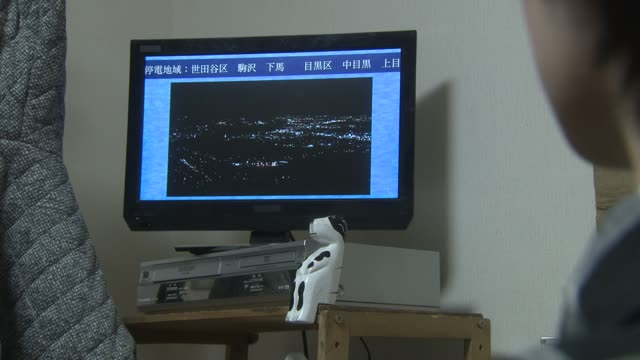
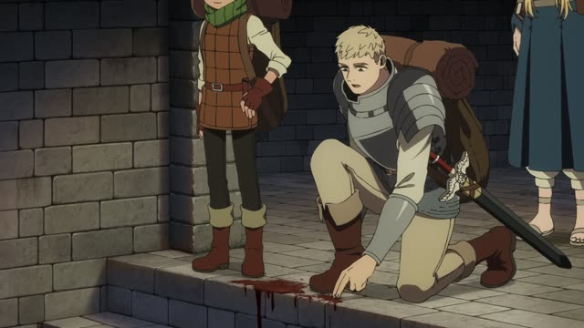

まだ～ていない
| Polite | まだ～ていません |
|---|---|
| Casual | まだ～ていない・～てない てない: spoken, everyday |
Same meaning: "haven't done it yet". Only the politeness changes.

Good Morning Call · Episode 5
原因は まだ分かっていません
"The cause still isn't known."
まだ + ていません says something hasn't happened yet, and it still might. It's the verb's て-form + いません.
On this card, 分かる → 分かって → 分かっていません, "isn't known yet".
1 Litre of Tears · Episode 2
まだ決まってない。
"It's not decided yet."
Casual speech uses ていない, and the い often drops: ていない → てない. On this card, 決まる → 決まって → 決まってない.
Quick Examples
Your friend asks if you've seen the new movie.
ううん、まだ見てない。
"No, I haven't seen it yet."
Not 見なかった ("didn't watch"). まだ見ていない means you still might.
CasualYour boss asks about the report.
すみません、まだ終わっていません。
"Sorry, I haven't finished it yet."
終わる → 終わって.
PoliteSomeone asks if you've eaten.
まだ食べてないよ。一緒に行く？
"I haven't eaten yet. Want to go together?"
食べる → 食べて.
CasualAt the station, a friend is late.
田中さんはまだ来ていません。
"Tanaka hasn't come yet."
来る → 来て.
PoliteWith and without
昼ご飯を食べなかった。
"I didn't eat lunch." That's over, you skipped it.
まだ昼ご飯を食べていない。
"I haven't eaten lunch yet." You still plan to.
Examples from Media

I'm Taking the Day Off · Episode 7
まだ部屋は 決まってないんですけどね。
"I haven't decided on a place yet, though."
まだ + 決まる ("be decided") → 決まってない = "not decided yet". んですけどね: "though".
Vinland Saga · Episode 5
まだ終わってない！
"It's not over yet!"
1 Litre of Tears · Episode 4
まだ着替えてないの？
"You still haven't changed?"
Aggretsuko · Season 2, Episode 3
まだ来てないのかな？
"I wonder if he's not here yet."

Dungeon Meshi · Episode 18
まだ乾いていない。
"It's not dry yet."
Slam Dunk · Episode 47
まだ見てないの。
"You haven't seen it yet?"

Shirokuma Cafe · Episode 33
まだ戦いは終わってないぞ。
"The battle isn't over yet."
Short for 終わっていない.

Shirokuma Cafe · Episode 18
まだ何も話してないのに。
"I haven't even said anything yet."
Nothing has happened so far, but it could.
Further Reading
A Dictionary of Basic Japanese Grammar
Entry "mada" · pp. 224–225